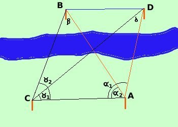
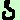

Problema di
Snellius

Vediamo ora come e' possibile determinare la distanza fra due punti
B e D entrambe inaccessibili
Come nel problema precedente, spostandoci da A a B possiamo
considerare i triangoli
ADC ed ABC
Di ADC conosciamo
- la misura di AC
- L'angolo DAC =
 1 1
- L'angolo DCA =
 1 1
quindi il triangolo e' risolvibile e posso calcolare AD
(vedi pagina precedente)
|
AD =
|
AC sen  1 1
----------------
sen 
|
Di ABC conosciamo
- la misura di AC
- L'angolo BAC = 2
- L'angolo BCA = 2
quindi il triangolo e' risolvibile e posso calcolare AB
(vedi pagina precedente)
|
AB =
|
AC sen 2
----------------
sen 
|
Se ora considero il triangolo ABD conosco
- la misura di AD
|
AD =
|
AC sen 1
----------------
sen 
|
- La misura di AB
|
AB =
|
AC sen 2
----------------
sen 
|
- L'angolo BAD come differenza
Angolo BAD = 1 - 2
quindi il triangolo ABD e' risolvibile e posso calcolare BD
ad esempio con Carnot
BD =  [AB2 + AD2 - 2·AB·AD
cos
( [AB2 + AD2 - 2·AB·AD
cos
( 1 - 2] 1 - 2]
Esercizio
supponiamo di spostarci dal punto A di 20 metri
AC = 20 m
calcolo gli angoli (con il teodolite)
Nota: questo e' un esercizio teorico e quindi considero numeri semplici: se
calcoli effettivamente gli angoli nella realta' troverai anche primi e secondi
e quindi i calcoli saranno molto piu' complicati
CAD = = 100°
CDA = = 50°
e quindi per differenza
= ADC = 180°-100°- 50° = 40°
inoltre
BAC = = 60°
BCA = = 70°
e quindi per differenza
= ABC = 180°-60°- 70° = 50°
troviamo
|
AD =
|
20 sen 50°
----------------
sen 40°
|
20·0,77
= ---------------- =
0,64
|
24,06 m
|
|
AB =
|
20 sen 70°
----------------
sen 50°
|
20·0,94
= ---------------- =
0,77
|
24,42 m
|
Essendo l'angolo BAD = 1 - 2 = ADC = 100°- 60° = 40°
avremo
BD = (24,422 + 24,062 -
2·24,42·24,06
cos 40°) = 15 m
(Naturalmente e' calcolato dalla calcolatrice)
|